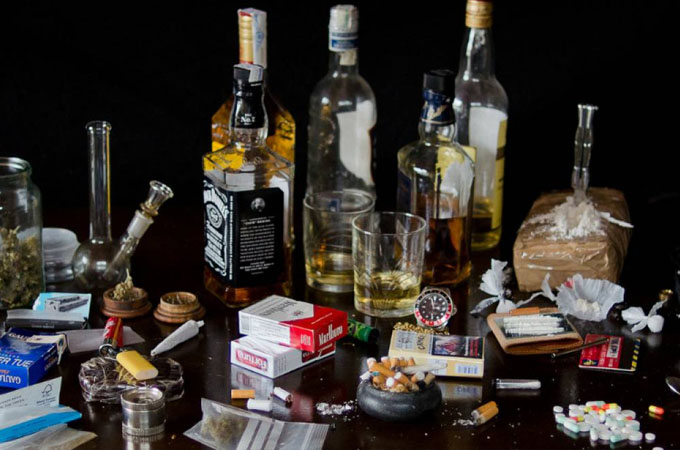
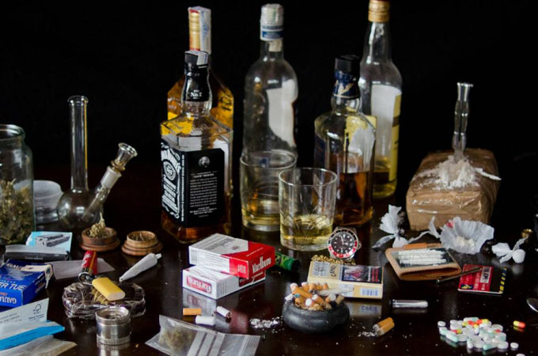

El país está en las cifras más altas de consumo de marihuana, cocaína, pasta base y tranquilizantes sin receta a nivel latinoamericano.
El uso y/o abuso de nicotina, alcohol y drogas ilegales es una conducta que está siendo cada vez más frecuente en la población adolescente, sobre todo en la asociación a otras conductas de riesgo, tales como violencia, actividad sexual no planificada, deserción escolar, conducción de vehículos en forma imprudente, entre otras.
Es así como, el uso de las distintas drogas, tanto legales como ilegales, se da en relación a un sin-número de variables: las relacionadas al sujeto y al proceso en el cuál este se encuentra inserto, la familia, el grupo de pares, el colegio y los contextos de ocio y tiempo libre. Todas estas variables deben ser abordadas y manejadas por los equipos que trabajan con adolescentes, entendiendo que muchas de estas variables, van a ser iniciadoras, gatilladoras o mantenedoras de consumos.
 

SEGÚN EL ESTUDIO DE LA ONU
El consumo de bebidas alcohólicas, por sí solo, ocasionó un promedio de 85.000 muertes anualmente. El consumo de alcohol está asociado con muertes que se pueden prevenir y con muchos años de vida con discapacidad.
Necesitamos medidas de salud pública, políticas y programas eficaces, viables y sostenibles para reducir el consumo de bebidas alcohólicas
En promedio, 85.032 muertes (1,4%) anuales se atribuyeron exclusivamente al consumo de bebidas alcohólicas En su mayoría, estas muertes (64,9%) correspondieron a personas menores de 60 años y se debieron principalmente a hepatopatías (63,9%) y a trastornos neuropsiquiátricos (27,4%), como la dependencia del alcohol. El consumo de bebidas alcohólicas es un factor contribuyente en más de 300.000 muertes (5,5%) al año al año en la región de las Américas.
Los resultados de este estudio indican que los países de ingresos altos tienen un mayor consumo per cápita de bebidas alcohólicas mientras que los países de bajo y mediano ingreso tienen una mayor tasa de mortalidad atribuible al alcohol para el mismo nivel de consumo de esas bebidas.